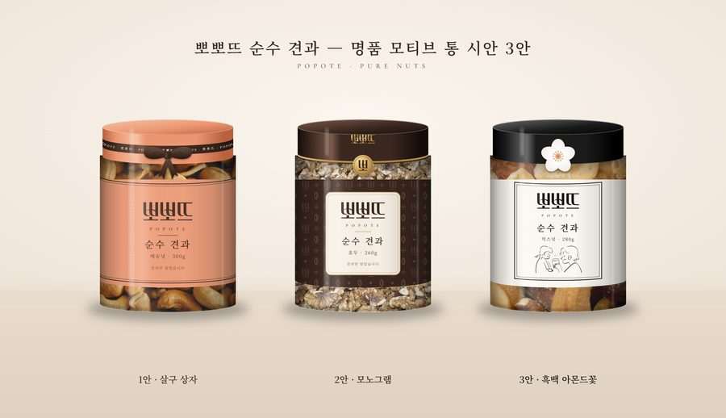
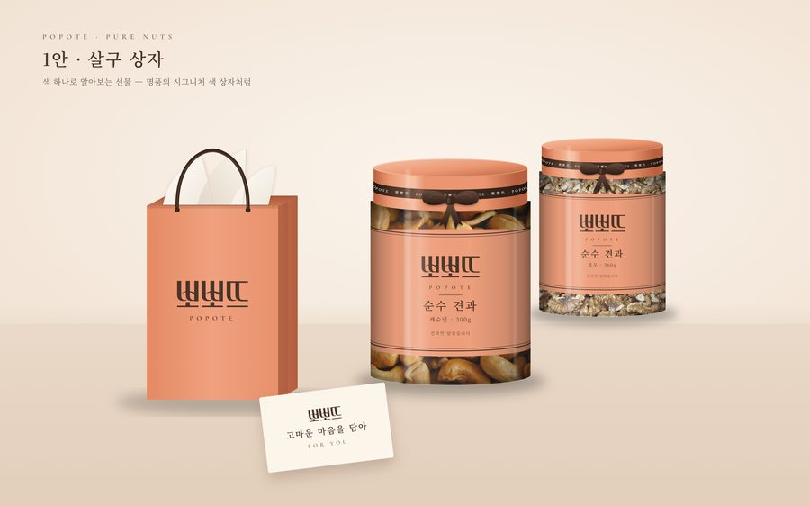
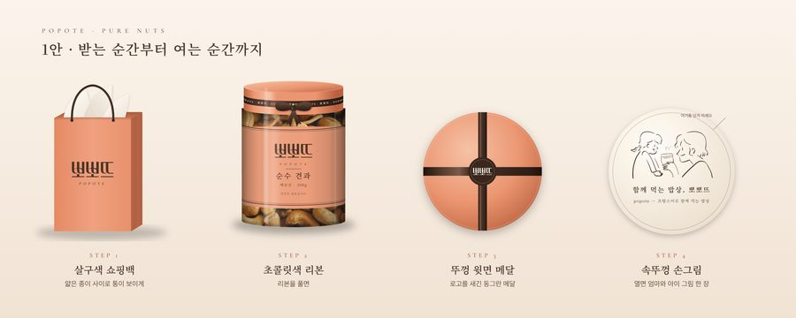
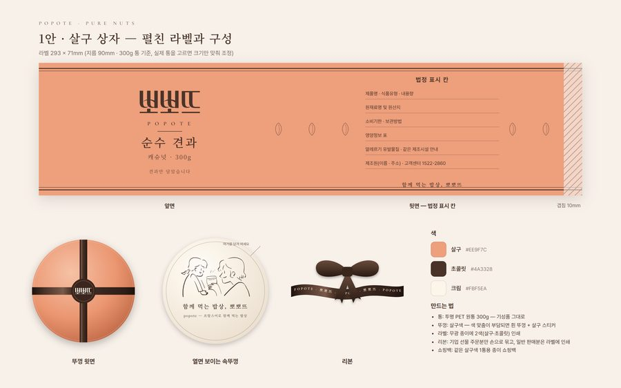
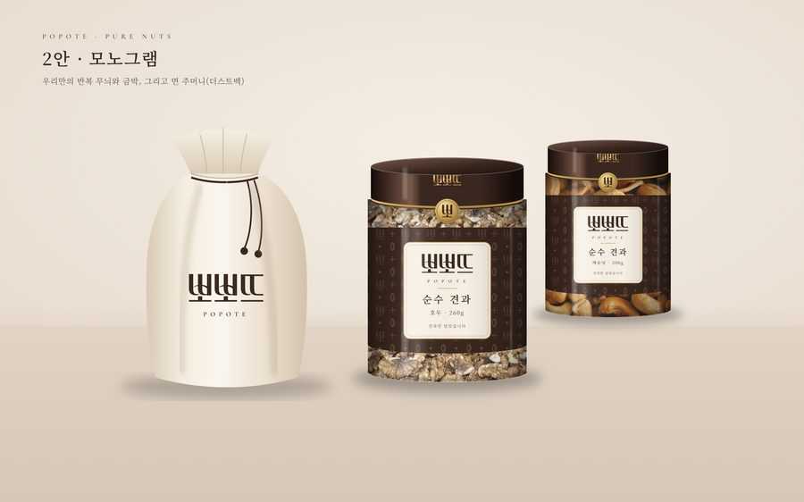
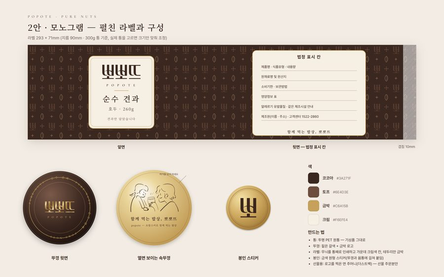
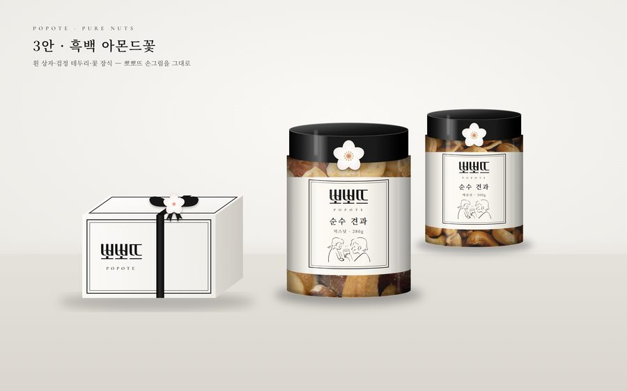
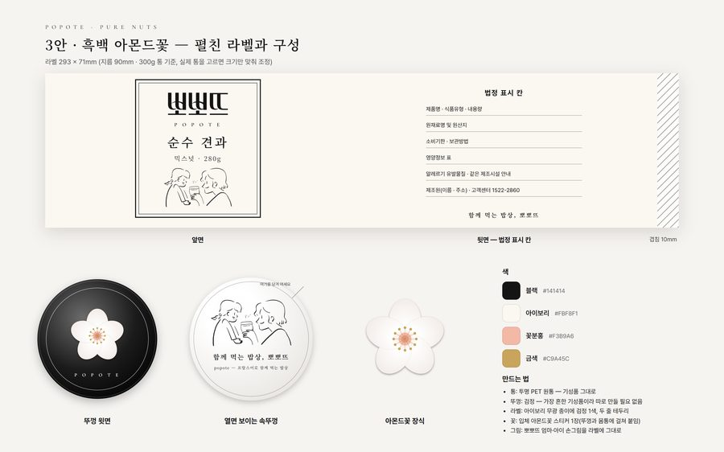

POPOTE · 견과 사업 검토 · 2026.10.18 통 시안
명품처럼, 포장부터 기분 좋은
뽀뽀뜨 순수 견과 통 — 시안 3안
명품 선물은 포장지부터 기분이 좋습니다. 명품 포장이 쓰는 장치 — 색 하나, 리본, 봉인, 면 주머니, 꽃 장식 — 만 빌리고, 로고·무늬·그림은 전부 뽀뽀뜨 것으로 그렸습니다. 통은 지금 시장에서 쓰는 투명 플라스틱통 그대로입니다.
'순수통'은 견과만 담은(건과일·양념 없는) 통 한 개짜리 제품으로 보고, 제품명 자리에 '순수 견과'를 넣었습니다. 뽀뽀뜨(popote)는 프랑스어로 '함께 먹는 밥상'이라는 뜻이라, 프랑스 명품 느낌과도 잘 맞습니다.

명품에서 빌린 장치 5가지
로고·무늬·고유 색은 가져오지 않고, '포장을 여는 기분'을 만드는 방식만 빌렸습니다.
- 색 하나상자 색만 봐도 어느 브랜드인지 압니다 — 에르메스 주황 상자, 티파니 하늘색 상자처럼.1안
- 이름을 짜 넣은 리본리본을 푸는 순간이 선물의 시작입니다.1안
- 반복 무늬와 금박루이비통·고야드처럼 우리 글자로 만든 무늬를 통째로 두릅니다.2안
- 봉인과 면 주머니뚜껑과 몸통에 걸친 봉인, 가방을 담아 주는 더스트백처럼 통을 담는 면 주머니.2안
- 꽃 장식샤넬 상자의 흰 꽃 장식처럼 — 우리는 아몬드 나무의 꽃을 답니다.3안
1안
살구 상자
권장
뽀뽀뜨 살구색 하나로 통·뚜껑·리본·쇼핑백을 맞췄습니다. 멀리서 봐도 '뽀뽀뜨 선물'입니다.



눌러서 크게 보기
- 명품에서 빌린 것
- 색 하나로 알아보는 상자 + 브랜드 이름을 짜 넣은 리본
- 대중가로 만드는 법
- 통은 지금 쓰는 투명 플라스틱통 그대로입니다. 일반 판매분은 리본을 라벨에 인쇄하고, 기업 선물 주문분만 진짜 리본을 묶고 쇼핑백에 담습니다.
- 어울리는 곳
- 일반 판매와 기업 명절 선물을 같은 통 하나로
2안
모노그램
뽀뽀뜨 로고의 '뽀' 글자와 아몬드 모양으로 우리만의 반복 무늬를 만들고, 금박과 면 주머니를 더했습니다.


눌러서 크게 보기
- 명품에서 빌린 것
- 반복 무늬 + 금박 + 봉인 스티커 + 면 주머니(더스트백)
- 대중가로 만드는 법
- 무늬는 라벨에 통째로 인쇄해 추가 공정이 없고, 금박은 로고·테두리·봉인 스티커에만 씁니다. 면 주머니는 선물 주문분에만 넣습니다.
- 어울리는 곳
- 거래처 VIP 선물, 명절 한정판
3안
흑백 아몬드꽃
아이보리 바탕에 두 줄 테두리, 검정 뚜껑, 흰 아몬드꽃 하나. 뽀뽀뜨 엄마·아이 손그림을 라벨에 그대로 넣었습니다.


눌러서 크게 보기
- 명품에서 빌린 것
- 흰 상자 + 검정 테두리 + 꽃 장식
- 대중가로 만드는 법
- 검정 뚜껑은 가장 흔한 기성품이고 라벨은 검정 1색이라, 셋 중 가장 싸게 만들 수 있습니다. 꽃은 입체 스티커 한 장입니다.
- 어울리는 곳
- 대량 판매, 가성비 선물
권장 — 1안 살구 상자
이유 색 하나로 '뽀뽀뜨 선물'이 기억되고, 같은 통으로 일반 판매(리본은 라벨 인쇄)와 기업 선물(진짜 리본 + 쇼핑백)을 같이 할 수 있습니다.
비용을 더 줄여야 하면 3안, 거래처 VIP 한정판이 필요하면 2안을 더하면 됩니다.
- 셋 중 하나(또는 1안 + 2안 VIP 한정판)를 고릅니다.
- 실제 통을 정합니다 — 300g 투명 원통 샘플 2~3종을 받아 지름·높이를 재고 라벨 크기를 맞춥니다.
- 견적을 받습니다 — 라벨 인쇄(색 수·금박), 뚜껑 색, 리본·쇼핑백·면 주머니.
- 라벨을 실제 크기로 출력해 통에 붙인 시제품 1개를 만들어 사진으로 확인합니다.
- 뒷면 법정 표시 문구는 원재료·제조원이 정해지면 채웁니다. 유아식과 같은 시설에서 만들면 '같은 제조시설' 문구가 필요합니다.
- 명품 브랜드의 로고·무늬·고유 색은 쓰지 않았습니다. 브랜드 이름은 설명을 위해서만 적었습니다.
- 뽀뽀뜨 로고와 엄마·아이 손그림은 뽀뽀뜨 공식몰(popote.kr) 이미지를 썼습니다.
- 통 안 견과 사진은 위키미디어 공용의 자유 이용(CC0) 사진입니다 — 실제 제품 촬영 사진으로 바꿀 자리입니다:
캐슈넛 ·
호두 ·
믹스넛
- popote 뜻: 프랑스어 위키낱말사전
- 라벨 크기는 지름 90mm 원통 기준 예시입니다. 실제 통을 고르면 크기만 바꿔 맞춥니다.